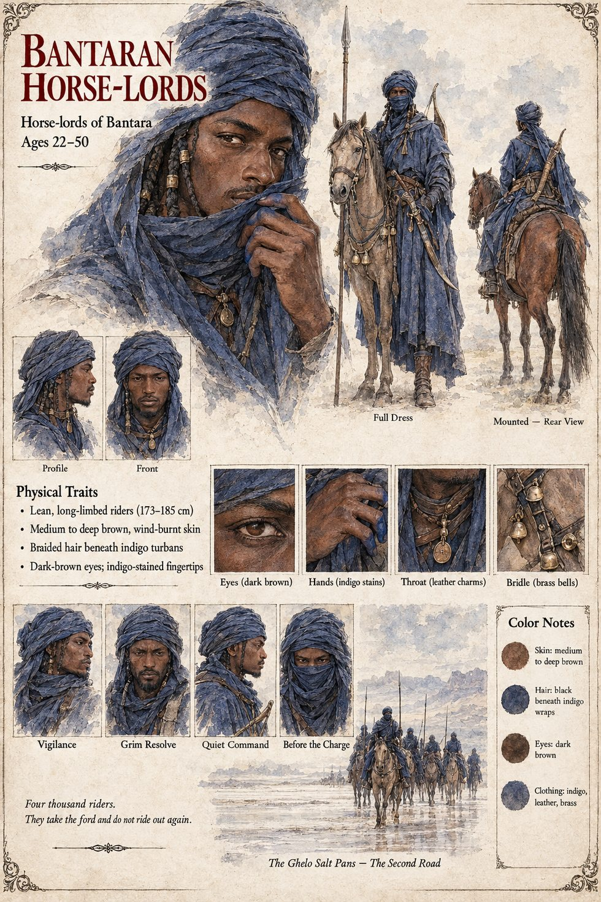

Bantaran Horse-Lords
The horse-lords of Bantara, two weeks' march beyond the Ghelo salt-pans · four thousand riders in Deyren · 22 to 50 on their sheet
Bantara lies to the east, two weeks' march beyond the Ghelo salt-pans: a kingdom of caravan-towns and horse-lords that had grown fat on the same trade roads Danjeri guarded and had never quite forgiven Danjeri for standing on them. Its merchants come and go at Kambaso as easily as weather and carry away the town's stories with their salt. A Bantaran caravan-master, Yero, names the palace dog; a Bantaran poet makes a song of it. In the second spring of the war the horse-lords move. Bantara's horse-lords, who had been watching the trade roads like herons at a pond, rode in during Deyren with four thousand riders, took the pans, took the ford of the Second Road while they were about it, and did not ride out again. Neither claimant can afford to defend the eastern road's toll-houses, and neither does. The riders are reported afterward to have expressed surprise at how easy it had been.
By the second autumn the salt caravans are diverted through Bantaran towns and a measure of millet in Kambaso sells for what a measure of gold-dust cost in Tiemoko's day. When the war exhausts itself, the Bantaran riders at the Ghelo pans had begun to look past the horizon at what the ruined kingdom might still be made to yield. The pans and the ford are not recovered for a generation, and when they were, they were recovered at a price. The histories blame the agents of Bantara for the war; a later century, finding that the horse-lords had in fact done rather well out of it, concludes that they must have started it. The Archival Log is plainer: a neighbouring power that fought neither claimant and took what both had left undefended. The manuscript names no horse-lord, and does not describe a battle.
The sheet's ages of 22 to 50, lean long-limbed builds (173 to 185 cm), medium to deep brown wind-burnt skin, braided hair beneath indigo turbans, dark-brown eyes, indigo-stained fingertips, leather charms at the throat and brass bells on the bridles are its own. Its printed line, Four thousand riders. They take the ford and do not ride out again., follows the manuscript; its panels are Vigilance, Grim Resolve, Quiet Command and Before the Charge, and its scenes Full Dress, Mounted — Rear View and The Ghelo Salt Pans — The Second Road.
“had been watching the trade roads like herons at a pond”